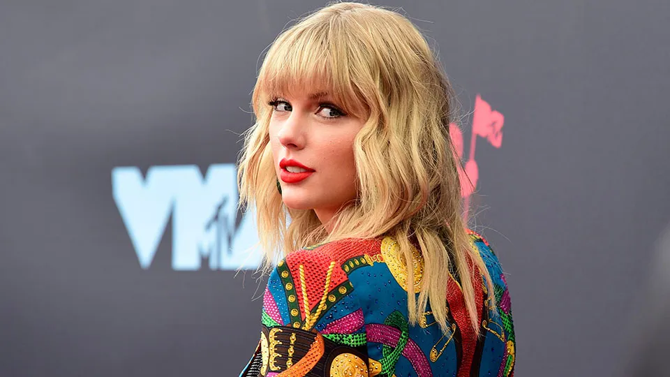
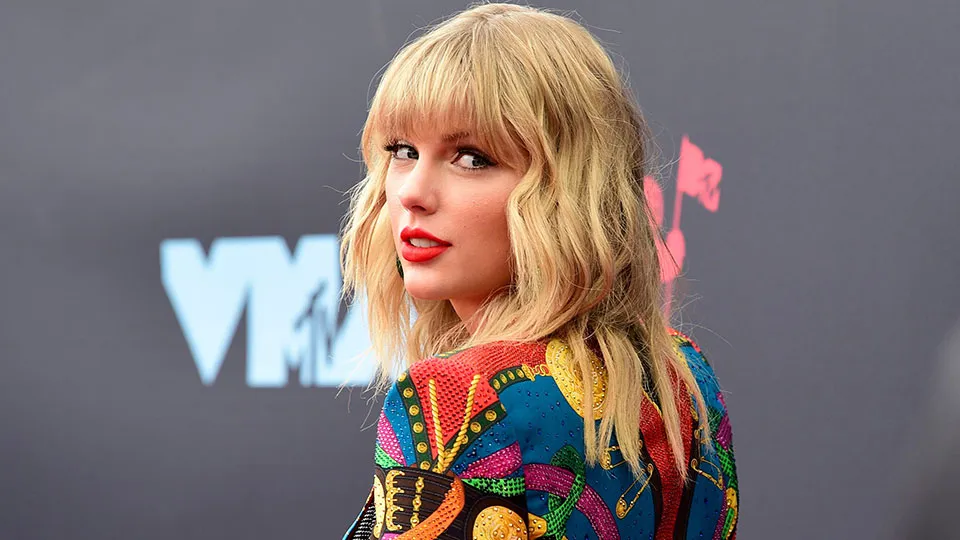

Taylor Swift está regravando seus álbuns antigos para ter controle total sobre sua música. Os novos lançamentos, chamados de "Taylor's Version", trazem uma nova vida às canções que os fãs amam, com uma produção atualizada e algumas surpresas.
Essa decisão surgiu após uma longa disputa com sua antiga gravadora, Big Machine Records, que vendeu os direitos dos seus primeiros seis álbuns sem o consentimento dela. Taylor decidiu regravar esses álbuns para recuperar o controle artístico e financeiro sobre seu próprio trabalho.
Cada lançamento de "Taylor's Version" inclui não apenas as músicas originais, mas também faixas inéditas que nunca foram lançadas antes.
 
